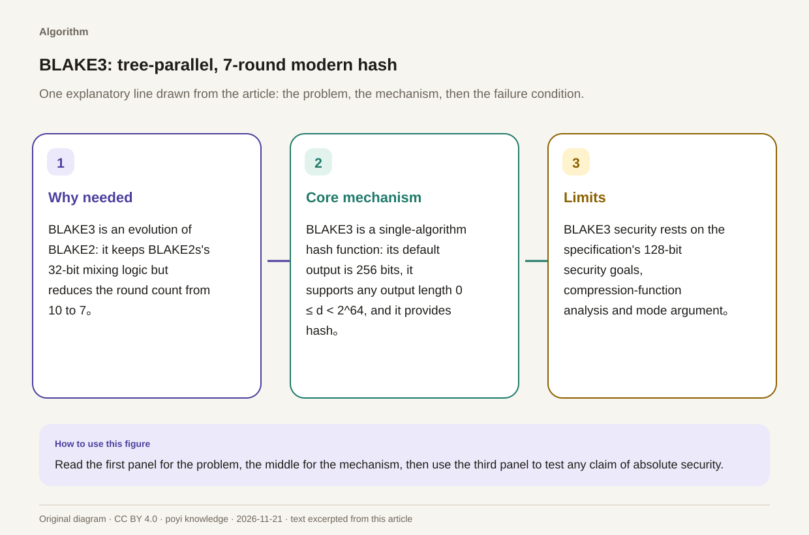
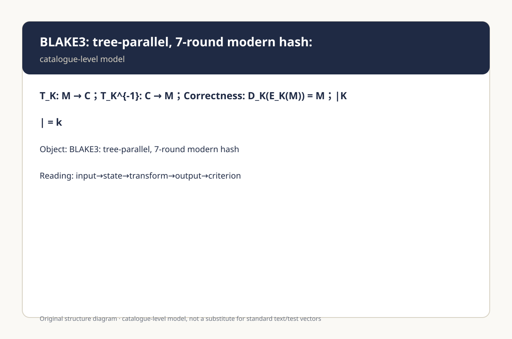

Principles
Algorithm: BLAKE3 (BLAKE3 散列). BLAKE3 is a single-algorithm hash function: its default output is 256 bits, it supports any output length 0 ≤ d < 2^64, and it provides hash, keyed_hash and derive_key modes. It splits input into 1024-byte chunks; chunks are leaves of a binary tree, left subtrees are full and at least as large as their siblings, and parent nodes combine the two child chaining values. Input is compressed in 64-byte blocks. The compression state v0…v15 consists of eight chaining words, four IV words, the 64-bit counter t0/t1, the block byte count b and the domain flags d; IV0…IV7 are the same constants as in BLAKE2s. It uses BLAKE2s's 32-bit mixing logic but only 7 rounds instead of BLAKE2s's 10. Each round applies G to the four columns and then to the four diagonals of the 4×4 state; G uses 16-, 12-, 8- and 7-bit right rotations. After each round except the last, the message words are permuted by the fixed permutation 2,6,3,10,7,0,4,13,1,11,12,5,9,14,15,8. The domain flags are bit masks: CHUNK_START=1, CHUNK_END=2, PARENT=4, ROOT=8, KEYED_HASH=16, DERIVE_KEY_CONTEXT=32 and DERIVE_KEY_MATERIAL=64. Inside a chunk, every block's counter is the chunk index; the block length is the actual input byte count (only the last block of the last chunk may be short); the first block sets CHUNK_START and the last sets CHUNK_END. A parent node uses one compression: the message words are the left child's 8-word chaining value followed by the right child's, with counter 0, block length 64 and the PARENT flag. Ordinary nodes truncate the compression output to its first 8 words as a 32-byte chaining value; the root uses the full 16-word (64-byte) output, encoded little-endian. The XOF repeats the root compression: the first root compression uses counter 0, and each additional 64 bytes increments the counter by 1; outputs are concatenated little-endian. In keyed_hash mode, the 256-bit key is parsed little-endian into eight words as the initial chaining value, and every compression sets the KEYED_HASH flag. derive_key has two stages: first hash the context string with the DERIVE_KEY_CONTEXT flag to get eight key words, then hash the key material with the DERIVE_KEY_MATERIAL flag.

Why it matters
BLAKE3 is an evolution of BLAKE2: it keeps BLAKE2s's 32-bit mixing logic but reduces the round count from 10 to 7, and it gains parallelism from a tree structure rather than offering multiple platform-specific variants as BLAKE2 does. BLAKE2 was announced in 2012; RFC 7693 of November 2015 specifies BLAKE2b and BLAKE2s, and the BLAKE3 specification version used in this batch is 20211102173700.
BLAKE3 targets 128-bit security with a 256-bit default output. The 7-round choice is based on existing BLAKE/BLAKE2 cryptanalysis; section 4 of the specification sets out the 128-bit security goals, compression-function analysis and mode argument.
The tree structure provides unbounded parallelism and supports verified streaming and incremental updates; these are BLAKE3's main new capabilities relative to BLAKE2. The specification's performance figures: on Intel Cascade Lake-SP, peak single-threaded throughput is about 4× BLAKE2b, 8× SHA-512 and 12× SHA-256; on a 32-bit ARM1176 it is about 1.3× SHA-256.
Applications
BLAKE3's unified API covers ordinary hashing, keyed hashing, key derivation and arbitrary-length output; one algorithm serves BLAKE2's use cases without choosing different variants. keyed_hash can be used as a keyed PRF/MAC; the key must be secret and 256 bits, and an ordinary hash must not be used directly as a MAC.
XOF suits settings that need extendable output; the tree structure supports verified streaming and incremental updates: a single chunk can be verified along the parent path from the root, and editing anywhere requires re-hashing only the modified chunks and their ancestor parent nodes, not everything to their right. BLAKE3 also provides 35 official test vectors covering input lengths from 0 to 102400 bytes and 131-byte outputs.

Limits & attacks
BLAKE3 security rests on the specification's 128-bit security goals, compression-function analysis and mode argument, together with existing BLAKE/BLAKE2 analysis. Implementation mistakes (such as chunk/tree boundaries or flag combinations) produce wrong results, not almost correct results.
XOF output length: BLAKE3 does not domain-separate different output lengths: a shorter output is a prefix of a longer one; output length is therefore not an independent domain label. When different domains are needed, use keyed_hash or derive_key rather than changing the output length.
Keyed mode: keyed_hash security depends on a secret, uniformly random key; the key must be 256 bits, and in practice an unkeyed hash should not be used directly as a MAC. derive_key separates uses through its context and material stages; the context should be hardcoded, globally unique and application-specific, and must not contain variable data such as salts, IDs or the current time.
Tree implementation: the root chunk's last block must be recompressed with the chaining value before the last block; parent nodes always use block length 64; the XOF increments the root counter per 64 bytes; flags must be combined exactly as specified. These are correctness requirements, not optional optimizations.
History
- 2012: BLAKE2 is announced; the BLAKE3 specification describes BLAKE2 as its evolutionary source. - November 2015: RFC 7693 is published, specifying BLAKE2b and BLAKE2s. - 9 January 2020: the first published version of the BLAKE3 specification is committed. - 2 November 2021: the BLAKE3 specification is updated to version 20211102173700, the version used in this batch.
Worked example & verification
Worked example
Take one published or standard test vector, record the input, the ordered steps and the byte-exact output, then compare with an independent implementation. Where no citable numeric vector is available, the entry records only structural steps and does not invent an output.
References
- Wikipedia search entry for BLAKE3 散列. https://zh.wikipedia.org/w/index.php?search=BLAKE3%20%E6%95%A3%E5%88%97
- Handbook of Applied Cryptography (Menezes, van Oorschot, Vanstone). https://www.cacr.math.uwaterloo.ca/hac/